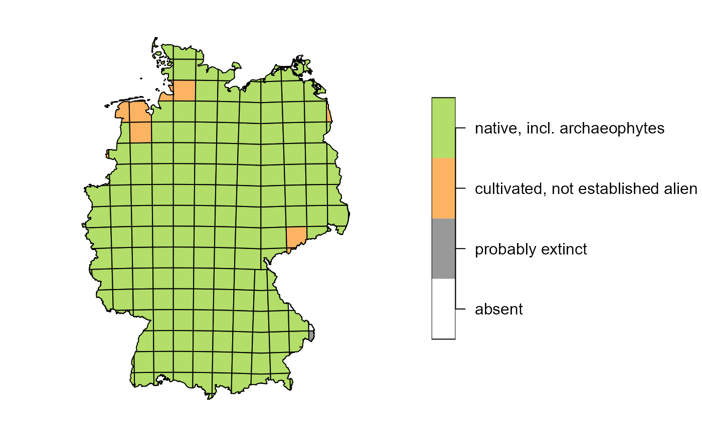
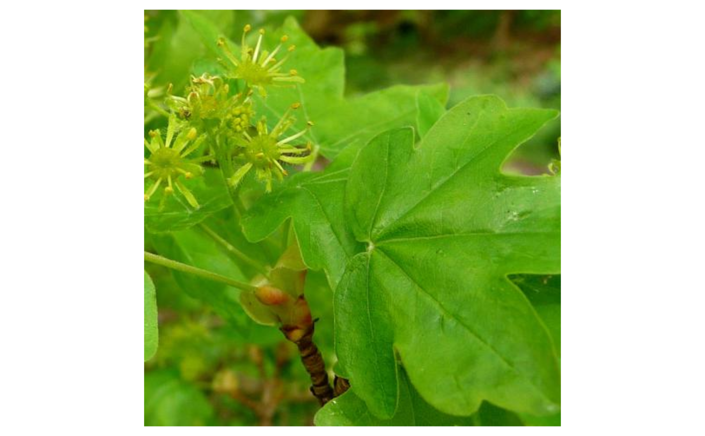
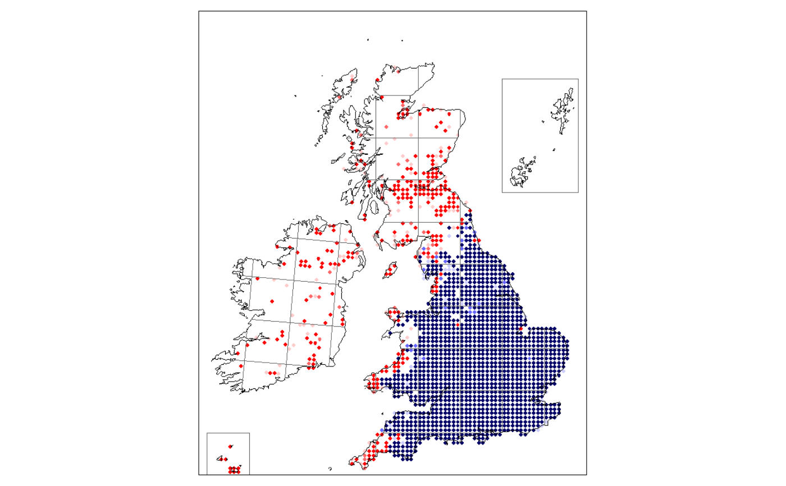
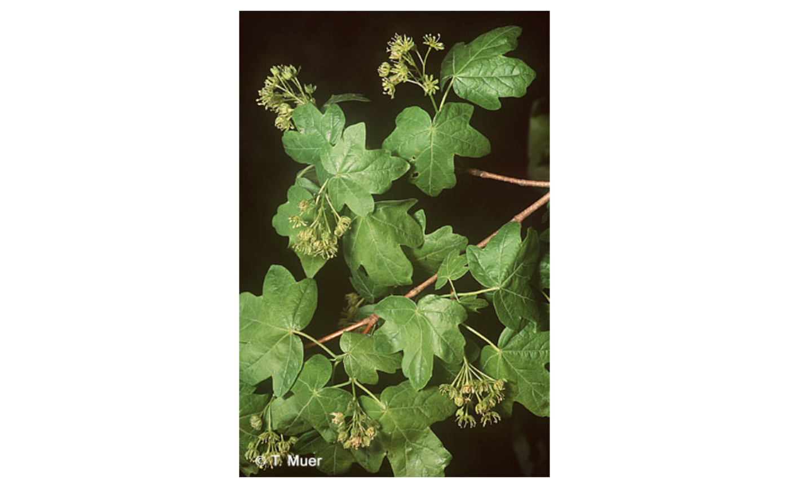
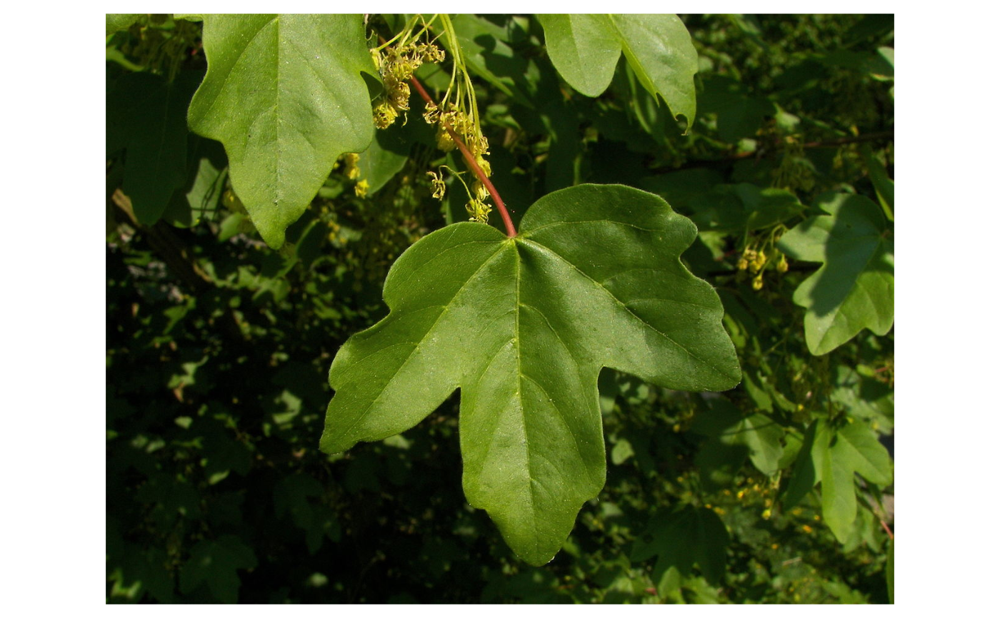
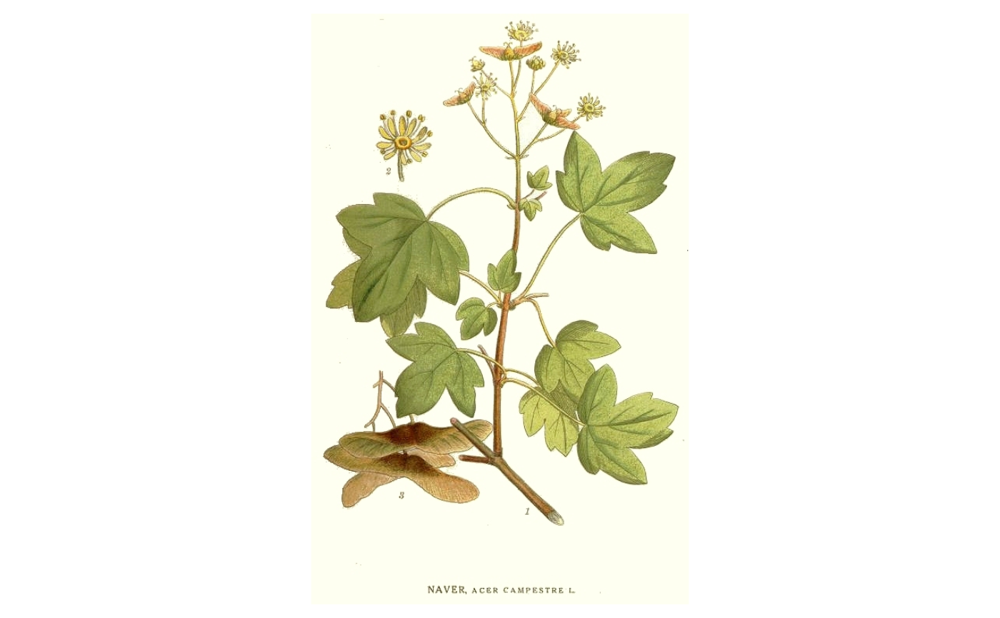

BotanizeR_collect.RdCollects information from FloraWeb
(images, map and species descriptions) and/or the Online Atlas of the British Irish flora as well as from user
defined image folders and columns in the species_list data.frame to show
them as hints in BotanizeR_quiz() or the BotanizeR Shiny app.
BotanizeR_collect( species_row, image_floraweb = FALSE, hints_floraweb = NULL, image_ukplantatlas = FALSE, hints_ukplantatlas = NULL, imagelinks_custom = NULL, image_folders = NULL, hints_custom = NULL, file_location = "temporary", only_links = FALSE, image_required = FALSE, image_width = NA )
| species_row | a data.frame of one row including the species for which
information shall be retrieved (Usually an entry of the |
|---|---|
| image_floraweb | logical that defines if images from FloraWeb shall be retrieved. |
| hints_floraweb | character vector defining the hints to retrieve from FloraWeb. 'hints_floraweb' must be either NULL or a character string with the wanted hints from c('map', 'description', 'status', 'habitat', 'family', 'German name'). |
| image_ukplantatlas | logical that defines if images from the Online Atlas of the British and Irish flora shall be retrieved. |
| hints_ukplantatlas | character vector defining the hints to retrieve from the Online Atlas of the British and Irish flora. 'hints_ukplantatlas' must be either NULL or a character string with the wanted hints from c('mapuk', 'familyuk', 'ecology', 'statusuk', 'trends', 'perennation', 'lifeform', 'woodiness', 'clonality'). |
| imagelinks_custom | character vector defining columns of |
| image_folders | character vector defining folders from which to retrieve images. Image file names need to contain the species names to be found. |
| hints_custom | character vector defining custom hints to use.
Note: In that case, these hints should be stored in |
| file_location | character vector defining a location to temporarily store the images retrieved from online resources. If put to "temporary", R will create a temporary folder automatically. |
| only_links | logical, if |
| image_required | logical indicating whether additional hints shall only
be retrieved if at least one image for the given species is available. Set
to |
| image_width | numeric defining to what width of the images shall be
rescaled in case |
list of named elements including (for the selected species) the hints as characters and images and maps either as link or image or spatial object.
This function provides the information shown in
BotanizeR_quiz() and the BotanizeR Shiny app. Have a look into
the BotanizeR tutorials
on how to use the quiz and the shiny app to learn more about its usage.
Weigelt, P., Denelle, P., Brambach, F. & Kreft, H. (2021) A flexible R-package with Shiny-App for practicing plant identification in times of online teaching and beyond. submitted.
# Load species list for Britain and Germany with species and IDs from # https://www.floraweb.de and https://www.brc.ac.uk/plantatlas/ data(BotanizeR_species) # Select Acer campestre species_row = BotanizeR_species[which(BotanizeR_species$SPECIES == "Acer campestre"),] # only ukplantatlas image(s) + hints + map hints <- BotanizeR_collect(species_row, image_ukplantatlas = TRUE, hints_ukplantatlas = c("mapuk", "familyuk", "ecology", "statusuk", "trends", "perennation", "lifeform", "woodiness", "clonality")) par(mar = rep(0.5, 4), oma = rep(0, 4)) plot(hints$image[[1]], axes = FALSE)hints$statusuk#> [1] "Status: Native"hints$clonality#> [1] "Clonality: Little or no vegetative spread"# only floraweb image(s) + hints + map hints <- BotanizeR_collect(species_row, image_floraweb = TRUE, hints_floraweb = c("map", "description", "status", "habitat", "family", "German name")) if (FALSE) { par(oma = c(0, 0, 0, 10.5)) plot(hints$map[[1]], pal = hints$map[[2]], key.pos = 4, main = "") } plot(hints$image[[1]], axes = FALSE)hints$family#> [1] "Familienzugehörigkeit: Aceraceae, Ahorngewächse"# only images from custom image links + custom hints hints <- BotanizeR_collect(species_row, image_floraweb = FALSE, hints_custom = c("ownhint_English_name", "ownhint_Description", "ownhint_Distribution"), imagelinks_custom = c("imagelink_1", "imagelink_2")) plot(hints$image[[1]], axes = FALSE)hints$ownhint_English_name#> [1] "English name: Field Maple"# only returning image links instead of actual images hints <- BotanizeR_collect(species_row, image_floraweb = TRUE, image_ukplantatlas = TRUE, imagelinks_custom = c("imagelink_1", "imagelink_2"), hints_ukplantatlas = c("mapuk", "familyuk"), only_links = TRUE) hints#> $images #> $images[[1]] #> [1] "https://www.floraweb.de/bilder/arten/1925.jpg" #> #> $images[[2]] #> src #> "https://www.brc.ac.uk/plantatlas/sites/www.brc.ac.uk.plantatlas/files/styles/large/public/images/Acer_campestre_Notts_SHammonds_2.JPG" #> #> $images[[3]] #> src #> "https://www.brc.ac.uk/plantatlas/sites/www.brc.ac.uk.plantatlas/files/styles/large/public/images/Acer_campestre_Notts_SHammonds_1.JPG" #> #> $images[[4]] #> src #> "https://www.brc.ac.uk/plantatlas/sites/www.brc.ac.uk.plantatlas/files/styles/large/public/images/Acer_campestre_Salop_SHammonds.JPG" #> #> $images[[5]] #> [1] "https://upload.wikimedia.org/wikipedia/commons/thumb/6/66/Acer_campestre_005.jpg/1280px-Acer_campestre_005.jpg" #> #> $images[[6]] #> [1] "https://upload.wikimedia.org/wikipedia/commons/f/f5/237_Acer_campestre.jpg" #> #> #> $mapuk #> [1] "https://www.brc.ac.uk/plantatlas/sites/www.brc.ac.uk.plantatlas/files/atlas_maps/3.gif" #> #> $familyuk #> [1] "Family: Aceraceae" #># retrieving nothing BotanizeR_collect(species_row)#> $images #> list() #># To load images from your local computer, specify an image folder with # pictures included. File names need to include the species names. if (FALSE) { hints <- BotanizeR_collect(species_row, image_folders = c("images/Asteraceae_Britain", "images/Trees")) }